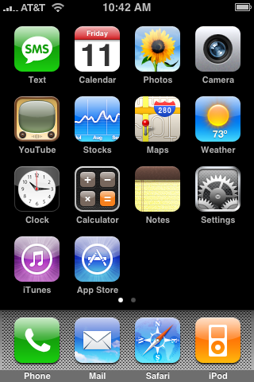
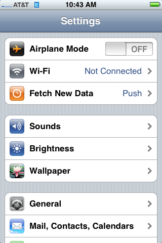

Chrome OS Wireless Setup
- Tap Settings. 
- Tap Wifi. 
- Tap MSU Resnet from the Wi-Fi Networks screen.
- Enter the following credentials:
UserName:BearPass Login
Password:Missouri State Password - Tap Accept to accept the server certificate.
- You are now connected to MSU Resnet